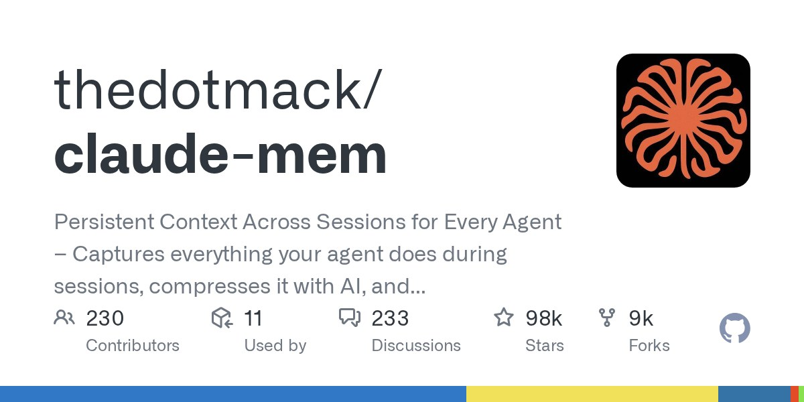

06 GitHub
thedotmack/claude-mem
세션이 끝나도 작업 맥락을 이어 주는 에이전트 기억 장치
★ 97,850이번 주 +2,900TypeScriptApache-2.0 사내 사용 가능릴리스 v13.34.2 (10.06)최근 활동 10.07테스트 있음예제 없음AGENTS.md 없음

claude-mem은 TypeScript로 만든 오픈소스 플러그인이다. 에이전트가 도구를 쓸 때마다 관찰 기록을 남기고, 의미 요약을 만들어 이후 세션에 넣어 준다. 세션이 끝나거나 연결이 끊겨도 에이전트가 프로젝트 지식을 이어 간다고 만든 쪽은 설명한다. 저장소는 2025년 8월에 만들어졌고 최신 릴리스는 2026년 10월 6일의 v13.34.2다.
무엇을 하는 물건인가
claude-mem은 AI 에이전트agent — 사용자 지시를 받아 파일 수정이나 명령 실행 같은 작업을 스스로 이어 가는 AI 프로그램가 세션session — AI 도구를 켜서 대화를 시작하고 끝낼 때까지의 한 번의 작업 단위마다 쌓은 작업 기록을 저장했다가 다음 세션에 자동으로 넣어 주는 플러그인이다. 인수인계 노트를 매일 자동으로 써서 다음 담당자 책상에 올려 두는 일에 가깝다. 이 도구가 없으면 새 세션을 열 때마다 지난 작업의 배경과 결정 사항을 사람이 다시 설명해야 한다.
스펙과 도입 조건
- 언어·실행 환경: TypeScript로 작성했고 Node.js 20.0.0 이상이 필요하다. 프로세스 관리용 Bun과 벡터 검색용 uv는 없으면 자동 설치되고, SQLite 3는 포함돼 있다.
- 설치 형태: npx 설치 명령이나 Claude Code의 플러그인 마켓플레이스로 설치한다. npm 전역 설치는 라이브러리만 깔고 플러그인 연결과 작업 서비스 설정은 하지 않으므로 권장하지 않는다.
- 지원 도구: Claude Code, OpenClaw, Codex, Gemini, Hermes, Copilot, OpenCode 등과 연동한다고 소개한다. OpenCode, T3 Code, Antigravity CLI, OMP, Pi, DeepSeek Harness용 설치 옵션이 따로 있다.
- 의존 서비스: 설치 중 브라우저에서 claude-mem 계정에 로그인하라고 안내한다. 이메일 링크 방식이고 카드는 필요 없다. 요약을 처리할 제공자는 claude-mem 자체 observer, 본인의 OpenRouter 또는 Gemini 키, Anthropic 요금제 중에서 고른다.
- 무료 체험 조건: 30일 무료 체험 동안 기억 처리는 사용자 요금제 밖에서 돌아가 요금제 사용량을 최대 100% 더 쓸 수 있다고 한다. 체험이 끝나면 구독하지 않는 한 Anthropic 요금제로 돌아간다.
- 계정 없이 쓰기: 제공자를 직접 지정하는 옵션, 온라인 가입 끄기 설정, CI나 비대화형 환경에서는 계정 로그인 없이 설치가 끝난다.
- 라이선스: Apache-2.0이다.
- 성숙도: 최신 릴리스는 v13.34.2(2026년 10월 6일)다. 안정판은 main 브랜치에서 npm으로 배포하고, core-dev와 community-edge는 소스로 직접 실행하는 브랜치다.
이럴 때 쓰면 좋다
- 개발팀이 며칠에 걸쳐 결제 모듈을 고칠 때 전날 에이전트가 내린 결정과 버그 수정 이력을 다음 날 세션으로 이어 가는 데 쓴다.
- 야간 배치 장애 원인을 여러 날 추적하면서 지난 세션의 조사 기록을 검색해 같은 가설을 반복하지 않게 한다.
- 담당자가 바뀐 시스템을 유지보수할 때 이전 에이전트 세션이 남긴 기록을 웹 뷰어로 훑어 작업 배경을 파악한다.
핵심 기능
- 지속 기억: 세션이 끝나도 컨텍스트context — 모델이 답을 만들 때 참고하도록 입력에 넣어 주는 대화와 작업 기록가 남고, 도구 사용 기록을 자동으로 수집해 요약하며 수동 조작이 필요 없다.
- 단계별 검색: search로 후보 목록을 보고, timeline으로 앞뒤 흐름을 보고, get_observations로 고른 항목만 자세히 읽는 MCPModel Context Protocol — AI 도구가 외부 기능을 불러 쓰도록 정한 공통 연결 규격 도구 3종을 쓴다.
- 프라이버시와 열람: 태그로 민감한 내용을 저장에서 제외할 수 있고, 웹 뷰어에서 기억이 쌓이는 모습을 실시간으로 볼 수 있다.
대안 대비 차별점
claude-mem은 에이전트 도구가 지난 세션 기록을 기억하게 하는 플러그인이다. Claude Code 외에 Codex, Gemini, Copilot, OpenCode와도 연동한다고 소개한다. 기록은 SQLite에 쌓고 키워드와 의미 기반 검색을 섞어 쓴다.
검색은 3단계로 나뉜다. 먼저 건당 약 50~100토큰token — 모델이 글을 읽고 쓰는 단위이자 사용량과 비용을 재는 기준짜리 목록을 받고, 고른 항목만 건당 약 500~1,000토큰으로 자세히 읽는다. 만든 쪽은 이렇게 걸러 읽으면 토큰이 약 10배 절약된다고 밝혔지만 측정 조건은 적혀 있지 않다. 이름이 알려진 다른 기억 도구와 견준 내용도 없다.
사내 도입 체크
- 외부 API 호출: 기록을 AI로 요약하며 claude-mem 자체 observer, 본인의 OpenRouter나 Gemini 키, Anthropic 요금제 중 하나로 처리한다. 어느 경로든 작업 내용이 해당 제공자에게 전달되는지는 확인 필요.
- 데이터 반출: Cloud Sync가 기억을 cmem.ai에 백업하고, Grok Bot 연동은 기본값이 호스팅 메모리(CMEM Pro)다. Cloud Sync의 기본 설정과 사내 보안 규정상 허용 여부는 확인 필요.
- 유지보수 주체: 저장소 소유자는 thedotmack 계정이다. 개인인지 조직인지는 확인 필요.
- 상용 대체: 대체할 상용 제품은 적혀 있지 않아 확인 필요.
원문 정보
제목: thedotmack/claude-mem
최근 활동: 2026.10.07